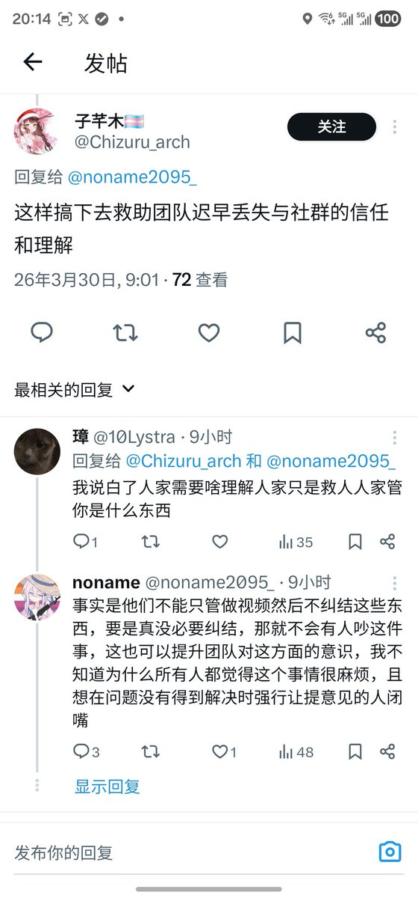

这里头最不平等的不知道你们能不能注意到，就是“真正做实事”的友跨跨，能拿温挡箭，一口一个我们，帮温柔到处咬人训人要服从友好顺直，但是温柔随时都切割，没有义务帮助跨，没有义务尊重跨，或者或者那些狗叫跟他都没关系，啊是没考虑会改正没有仇恨跨性别啦，等哪天温柔全改口你们都得被打成猪狗都不


有0个“不了解但被不沟通的跨性别攻击才应激”的顺直救助者存在，所有拿这个大张旗鼓炒作跨性别不好歹的都声称自己特了解这个群体，到底是誰不去沟通只谩骂，人小朋友一开始就是直接向温柔反应，但是有任回应吗，到现在都没法自己沟通，到现在反而都是通过炒作狗来回应，跟“跨性别不知好歹”的炒作狗沟通 https://t.co/MRA6GO0eSl